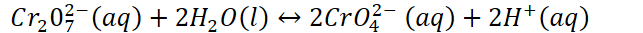
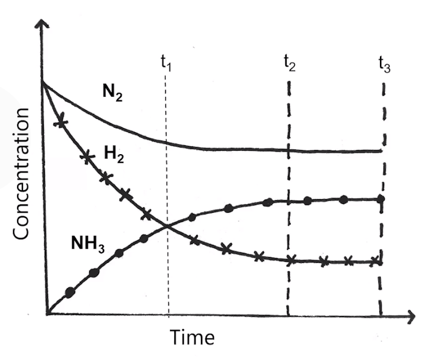

Many chemical and physical changes are reversible
All phase changes are reversible - ice can melt then refreeze
Dissolved salts can precipitate out then dissolve again
Many chemical reactions are reversible
{width="6.697916666666667in" height="0.34375in"}
Left to right reaction: forward reaction
Right to left reaction: reverse reaction
Some reversible processes:
Loss and gain of protons in acid-base reactions
Loss and gain of electrons in redox reactions
Equilibrium: the state at which concentrations of all reactants and products remain constant with time
In reversible reactions, the forward and reverse reactions will eventually "settle down" and proceed at the same rate
Rates of forward and reverse reactions are equal => no net change => reaction is at equilibrium
Reactants collide and form products, products then collide with each other and form reactants
At equilibrium, concentrations of products DO NOT have to be the same
Reaction will look like it has stopped - no observable change
Equilibrium is dynamic: forward and reverse reactions are still happening, just at the same rate
Concentrations of products and reactants do not change
However, the concentrations are not necessarily equal
{width="5.03125in" height="4.239583333333333in"}
T1: equal concentration: does not signify equilibrium
T2: no observable change in concentration: reaction is at equilibrium